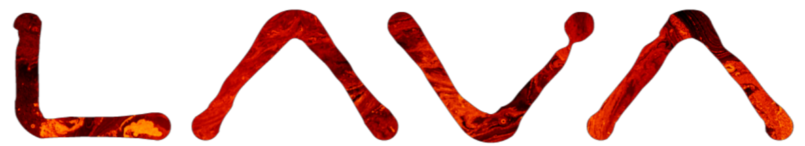
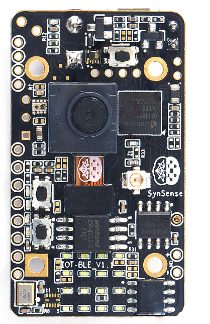
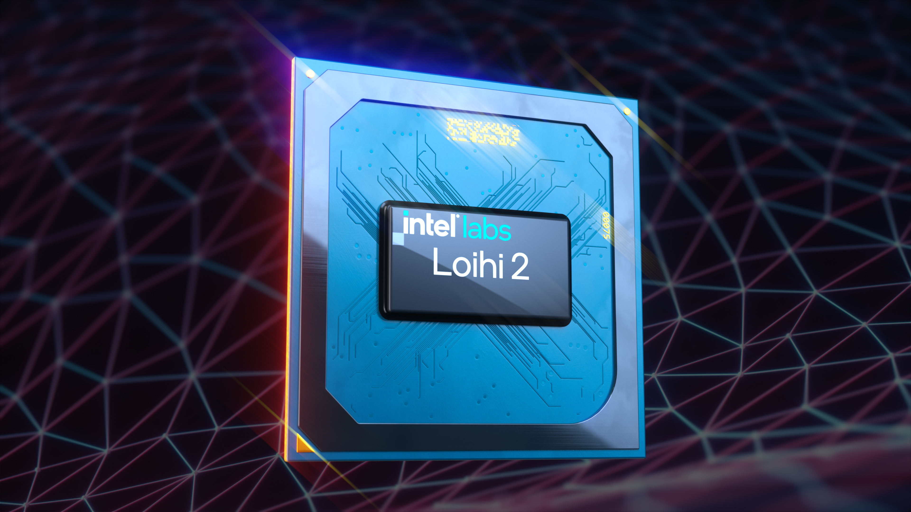
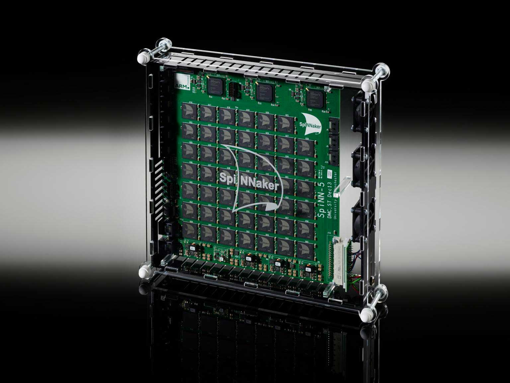

Introduction to co-design for on-device learning
Michail Rontionov, University of Southhampton
Jens E. Pedersen, Technical University of Denmark
Agenda
- Approaches to neuromorphic toolchains
- Introduction to NIR
- Motivating work: NIR → FPGA Compiler
- Compilation Demonstration
Approaches to neuromorphic toolchains
Neuromorphic Toolchains: What do they do?
Typically, they encode three important parts:
- Network Conception and Simulation.
- Translation to Hardware Representation.
- Hardware Execution.
→
→
Network Simulators
The one you pick typically depends on where you're coming from.
Neuro-science

Machine Learning

Hardware Representation
If your simulator was built for your hardware, you're in a good position..
→

→

→

Hardware Representation
But neuromorphics is a young field.
- What if your simulator or hardware doesn't support your model?
- What if an iteration of your existing network isn't supported by your simulator or hardware?
- What if your hardware doesn't have the representational accuracy required?
- What if you no longer have access to the hardware and need to use something else?
- How can you evaluate your algorithm across various hardware paradigms?
- …
You're stuck! You need to either port your code to another one